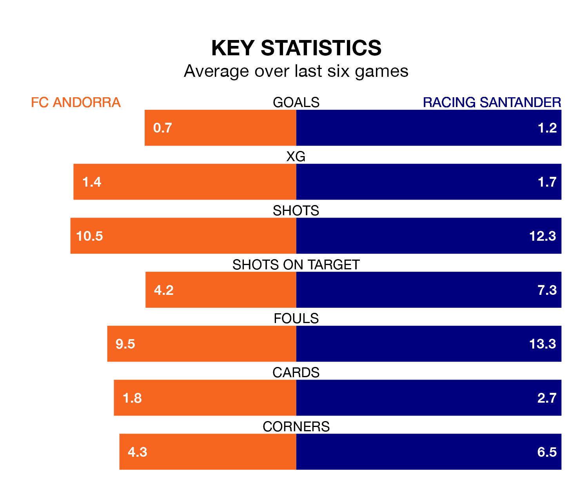

FC Andorra host Racing Santander on Friday at Estadi Nacional in the Segunda División.
In their last league match, on Sunday, Andorra drew with RCD Espanyol 1-1 away, with their goal scored by Iván Gil Calero.
Racing also drew, 0-0 at home against Levante UD on Saturday.
With 55 goals in 36 games so far this season, Racing are the league's second-highest scorers with 1.5 goals per game. But they are conceding more than average too, letting in 50 goals at a rate of 1.4 per game.
Andorra, meanwhile, are below average scorers, with 0.8 goals per game, compared to a league average of 1.1. They have conceded 1.2 goals per game.
The hosts are 21st in the table after 36 games, of which they have won nine and drawn nine, earning 36 points.
The away side are 13 places ahead of Andorra in eighth, with 15 wins and nine draws putting them on 54 points.
In Gerard Fernández Castellano, Racing have one of the league's sharpest shooters so far this season. He has notched 17 goals in 35 appearances, to sit second in the scoring charts.
Andorra's top scorers, with four goals each, are Manuel Nieto Sánchez, Aurélien Scheidler and Gil Calero.
In the last five years, Andorra and Racing have played each other on four occasions. Racing won all of them.
On average, Andorra scored 0.2 goals and Racing 2.0 in those matches.
Their last meeting was on December 19, when Racing won 2-0 at home.
The home team are in mixed form in the Segunda División, with two wins and a draw from their last six games.
With two wins and two draws over that period, Racing's form is slightly better – they have taken eight points from 18, compared to Andorra's seven.
Updated: 07:59 (UTC), 26/04/24